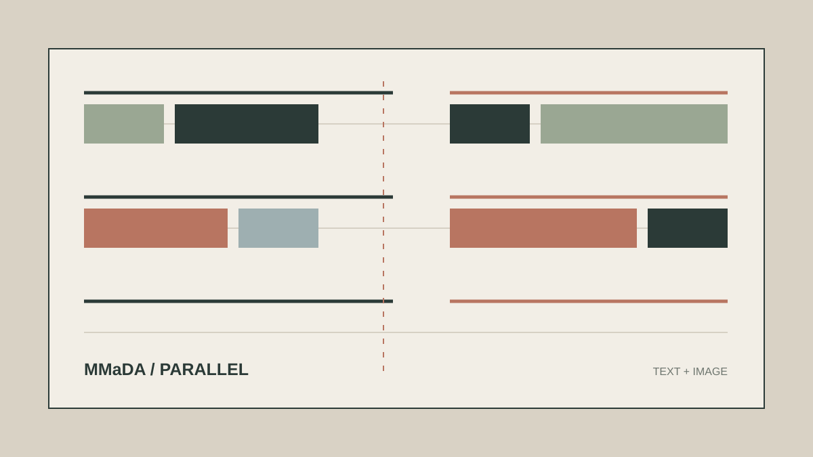
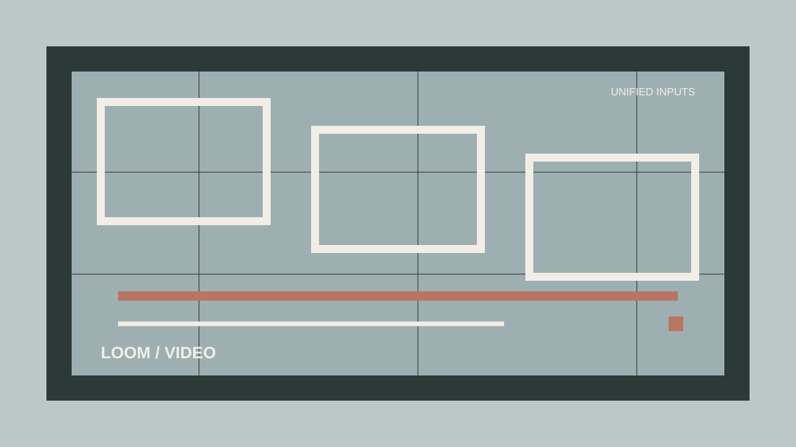

01
Research experience
Spectral-Direct
Working with Assoc. Prof. Ziwei Liu on spectral token allocation for pixel-space generative transformers.
Undergraduate researcher · Peking University
I study how generative models organize visual information, with a focus on multimodal learning and efficient visual systems.
I am an undergraduate student in Intelligence Science and Technology at the School of Electronics Engineering and Computer Science, Peking University.
My interests sit at the intersection of generative modeling, multimodal learning, and the design of efficient visual representations. I enjoy working close to both the idea and the implementation.
Education
Peking University
B.S. in Intelligence Science and Technology
School of EECS · 2023-2027
Focus
Generative visual systems
Generative modeling · multimodal learning · efficient visual representations
Research with Assoc. Prof. Ziwei Liu · MMLab@NTU · 2026-present
Research experience
Working with Assoc. Prof. Ziwei Liu on spectral token allocation for pixel-space generative transformers.
Research contributions in multimodal generation and editing.

01 / multimodal diffusion
02 / unified video* Equal contribution or alphabetical ordering as indicated by the paper.
I am always glad to exchange ideas about generative models, multimodal systems, and research.